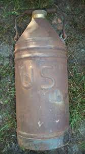
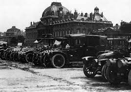
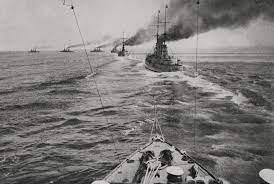
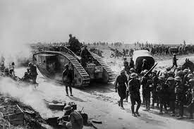
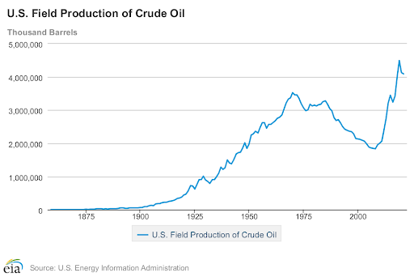
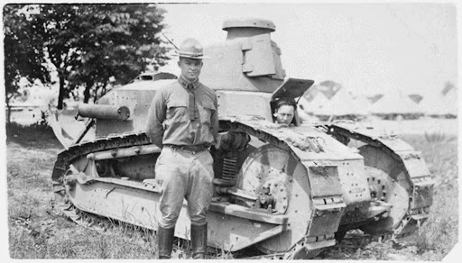
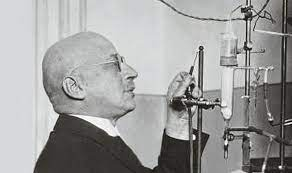
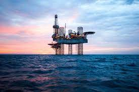

Eve of War The world on the eve of WWI relied on horse, buggy, and train for transportation, thought wars to be fought by cavalry and men, and heated homes with wood and coal. However oil evolved to be an essential component of military use, and it quickly extended to civilian contexts when the fighting stopped. The following three events underscore oil’s role in the strategy and overall outcome of the war.

Taxi-cab Armada - September 1914 Over the course of two days, French General Joseph Gallieni organized the transportation of reserve troops to the front via taxicab. Gallieni called his improvisational mobilization force the Taxicab Armada, showing the world for the first time the strategic value of oil-powered motorcars.

Battle of Jutland - June 1916 The primarily oil-burning British Fleet fought the primarily coal-burning German fleet for control of the North Sea. The British were able to take control of the North-Sea, blockading German supply routes. This led Germany to scramble for other oil sources, forcing them to divert resources away from their two-front war to Romanian and Armenian Oil fields.

Battle of Amiens - August 1918 The allies' use of 600 tanks in the battle of Amiens led to a swift victory against German static defenses. Mobile armor undermined the “primacy of defense” which had previously dictated the terms of battle on the western front. In less than a day, allied troops pushed the Germans back 12 km, previously unthinkable among battles fought over meters.

Oil Production - Post War Oil’s emergence as a strategic commodity on the battlefield precipitated its production for domestic use in Iran, where production rose from 1,600 to 18,000 barrels a day from 1912-1916. In America national oil production increased 38% between 1914 - 1918.

Oil and Transportation Oil’s military origins shaped postwar changes in transportation. Realizing the strategic advantage of motorcars in France, General Dwight Eisenhower would later convince the military to build an interstate highway system. Eisenhower stated that “the old convoy” in France “had started me thinking about good, two lane highways”.

Oil and Agriculture German scientist Fritz Haber discovered a way of creating synthetic fertilizers from factories previously converting oil to tnt. Where previously soil fertility was nourished by a rotating set of crops, now farmers could focus on growing one crop all year round, with soil fertility held constant by artificial fertilizers. This led to greater efficiency and larger farming yields.

Oil and the Modern World Proving itself paramount for military and economic power during WWI, oil has transformed the world beyond transportation and agricultural development. The resource dubbed “black gold” has been the source of geopolitical conflict for the last century. Countries with the highest GDPs by and large have the most stable access to oil. And the burning of oil, natural gas, and fossil fuels have above all contributed to the current climate crisis.
